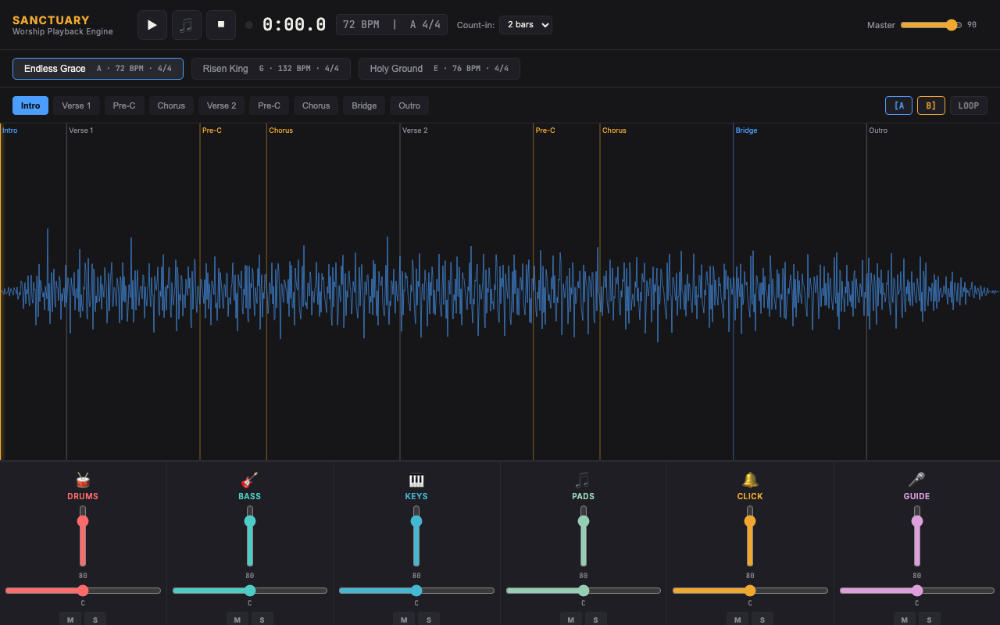
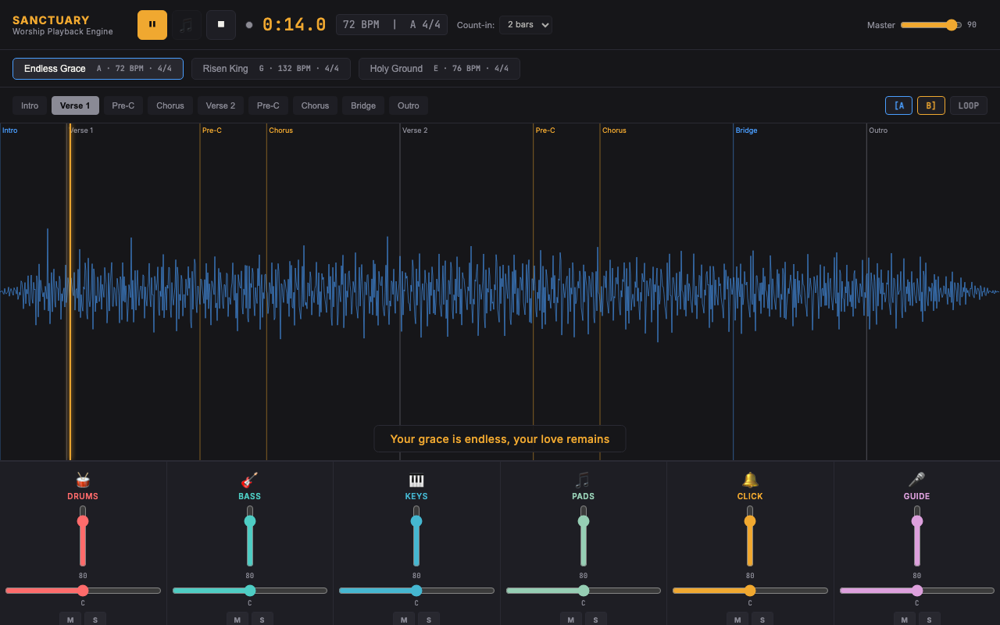

Every issue you listed, covered in the demo
✓Playback transport reliability
✓Section navigation behavior
✓Audio synchronization
✓Click track timing
✓Guide cue timing and triggering
✓Stem routing and playback
✓Mixer channel behavior
✓Count-in functionality
✓Audio engine stability
Demo screenshots

Song loaded, transport ready
Section navigation, mid-playback

6-stem mixer with mute/solo
"I am obsessed with audio. I have been since childhood. Getting it exactly right is not a detail to me, it is the whole point."
Background
🎓
Bachelor of Music, St. Olaf College
Formal music theory, composition, ear training, and production. Fifteen-plus years in DAWs (Ableton Live, Logic Pro, Pro Tools) starting in fifth grade.
🎧
Professional Wedding DJ
Live events mean no second chances. I am dedicated to getting audio exactly perfect for every performance, and that mindset carries directly into how I build software.
🔌
Python MIDI Bridge (Production-Ready)
Built a Python program to bridge MIDI output from an out-of-date DJ controller to my current DJ software, with live real-time signal processing. It runs at every gig. Zero failures in production. Idiomatic of how I approach audio software: it works under pressure, every time.
💻
Full-Stack Software Engineer
Two and a half years at U.S. Bank (React, Python, SQL), sole developer on a 60,000-line internal platform serving 600 users/month. Current contract at Optum (Angular, .NET/C#, PostgreSQL). 150-plus story points delivered.
Technologies
Web Audio API
AudioContext / OfflineAudioContext
Wilson Lookahead Scheduler
Python (rtmidi, signal processing)
Ableton / Logic / Pro Tools
React
Angular
Python / .NET / Java
SQL / PostgreSQL
Docker / Kubernetes
Audit approach for the initial engagement
01
Review the codebase
Read the full audio architecture end to end. Map the signal flow, scheduler, transport, and routing before suggesting any changes.
02
Reproduce and root-cause
Systematically reproduce each of your nine issues. Trace each one to its specific root cause. Document findings before writing a fix.
03
Fix high-priority bugs
Targeted, surgical patches for transport reliability, sync drift, and timing issues. Each fix tested in isolation.
04
Deliver recommendations
A written analysis of root causes, fixes applied, and architectural recommendations for the platform's next phase.